aimezaimez
aimezaimezThis document walks through the canonical figures the routing substrate has produced over the past four months. It is a self-contained surface that Jen Schwarz can engage with at her own pace. Each figure carries a structured caption with a title, an overview and per-panel descriptions, followed by a structured discussion of remarks, claims, boundaries, limitations, things to improve and questions.
The substrate models pedestrian routing on the Midtown Manhattan corridor (40th to 59th Streets, Lexington to 8th Avenues) as a graph problem with two operative measurements: a camera-derived stress field on the demand side, per block and locked in a project decision record, and a seven-layer cross-street capacity model on the supply side, per edge and derived from twenty-five public NYC Open Data sources. The routing layer combines them as cost equals stress over capacity.
The core empirical findings are that the routing layer produces strictly dominant alternative paths once it can read the second-order capacity field, that the substrate shows an allosteric soft-mode redistribution under a static perturbation with zero leakage across the corridor boundary, that the supply and demand layers are orthogonal at the per-edge level (Pearson r = -0.014) and that the lived-knowledge audit aligns at 8 of 12 reference blocks with zero misalignments.
The synthesis question at the end asks whether the substrate's behavior is consistent with operating near a rigidity transition in your formalism, and what control parameter and response amplitude metric you would suggest if so. Two recent papers, Sridhar et al. on allocentric flocking and Sane et al. on generalization at the edge of stability, appear in the per-figure discussions as cross-domain anchors that make the same methodological move in different fields.
The figures are grouped by purpose. Section 1 covers the routing demonstration figures. Section 2 covers the substrate's underlying second-order constraint field. Section 3 covers the spectral analysis of the corridor graph operator. Section 4 covers the validation figures. Section 5 covers extended scenarios. The synthesis section consolidates the open conceptual questions into one question, and the references section lists the related literature by domain.
Figure 1

Remarks. This is the demonstration's anchor. It shows the two routes the routing layer can produce given access to either the first-order graph alone or the first-order graph plus the second-order capacity field. The contrast is unambiguous: same task, same hop count, very different second-order load.
Claims. The routing layer can produce a strictly dominant alternative once it can read the second-order constraint field. The dominance is in measured stress accumulation, not in inferred user comfort. The figure claims a measurable substrate-level difference, not a behavioral preference.
Boundaries. The figure is for one origin-destination pair, Grand Central to Carnegie Hall. The substrate covers the Midtown corridor (40th to 59th Streets, Lexington to 8th Avenues). The shortest path is the unit-weight A* optimal, and alternative tie-breaks may produce slightly different specific routes with the same overall stress profile.
Limitations and caveats. The stress field is camera-derived, not behaviorally validated. The 22 percent reduction in accumulated stress is a substrate-level number; whether a real pedestrian would experience the second route as 22 percent less stressful stays unmeasured here. The cumulative-stress curve aggregates per-edge stress with no weighting for path length, time of day or pedestrian profile.
Things to improve. Add a third panel showing the stress-aware route under a time-varying capacity field (peak-hour subway egress, active scaffolding sheds), so the recommendation shifts with the field. The current figure is static.
Questions for Jen. The cumulative-stress curve has a structural feature I find interesting: the divergence between the two routes accumulates monotonically along the path and spreads across many edges, with no single bottleneck dominating it. Does this match the soft-mode picture you would expect from a system near a rigidity transition, where a small constraint perturbation produces a redistributed response spread across the structure? I read the monotonic divergence as evidence that local edge cost differences integrate over path length into path-level differences, and I am not sure if that is the right physical intuition.
Figure 2
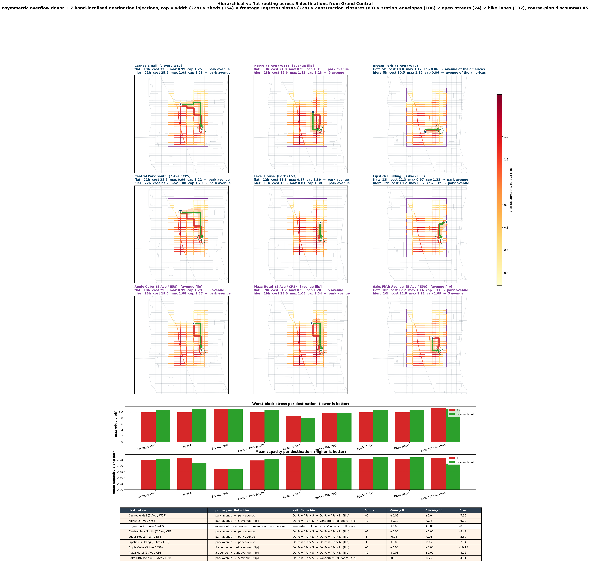
Remarks. The contrast generalizes across destinations. The flat route differs from the hierarchical route on eight of the nine destinations. The metric trade-off is consistent: hierarchical routing chooses an avenue spine that lowers total cost while accepting a slightly higher max-edge cost on the chosen avenue.
Claims. The substrate's recommendations hold across nine destinations under the same routing layer and capacity model, so the structural argument is a property of the field. The flat-versus-hierarchical contrast also holds, so hierarchical routing is doing real work.
Boundaries. Nine destinations is a sampling, not a census. All destinations sit within the Midtown corridor, and the substrate stays untested on destinations outside the 40th to 59th Street range. The capacity model is the seven-layer combined version, and the contrast may behave differently if individual layers are removed.
Limitations and caveats. The hierarchical mode applies a coarse-tile-plan discount (factor 0.45) to edges that lie on the planned avenue. This is a heuristic, not a derived parameter, and alternative discount values produce different specific routes though the qualitative picture holds across the range tested. The comparison favors hierarchical routing partly because of this discount.
Things to improve. Sample destinations outside the corridor (for example Penn Station to Carnegie Hall) to test whether the substrate generalizes beyond its geographic envelope. Add an ablation: the same nine destinations with each capacity layer removed in turn, to identify which layers drive the contrast.
Questions for Jen. The hierarchical mode reads to me as a coarse-grained scaffolding operation: it imposes a low-frequency structure (which avenue to use) on top of which the high-frequency edge-by-edge routing happens. This feels analogous to the multi-scale moves your group has made in different contexts. Does the coarse-grained and fine-grained decomposition here look like the same scale-separation move you would deploy in a physical system, or is it doing something else operationally?
Figure 3
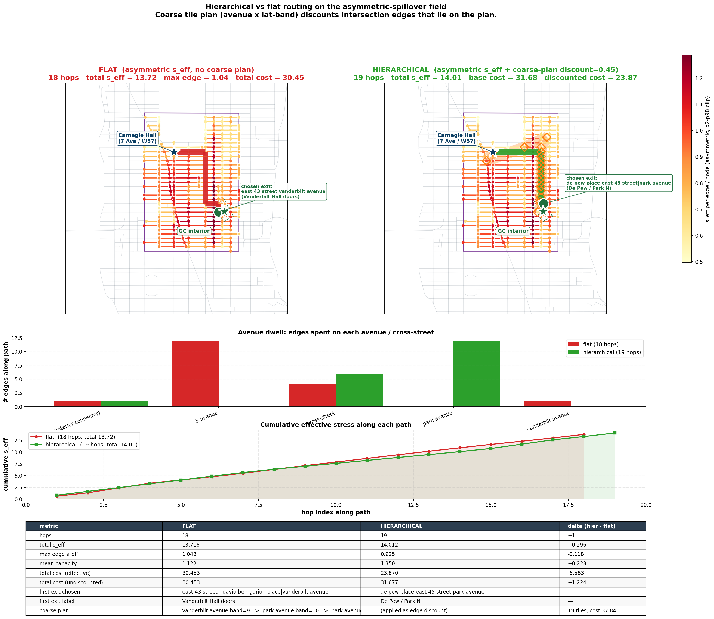
Remarks. This figure isolates the multi-scale move. Flat routing optimizes hop by hop; hierarchical routing biases path choice toward avenues with second-order capacity headroom (Park Avenue here, against 5th Avenue under flat routing) by applying a coarse-tile-plan discount.
Claims. The hierarchical layer is doing real work. The comparison shows two structurally different paths with a different avenue spine, a different exit point and a different per-block stress profile. The avenue-dwell chart makes the structural difference visible, where 5th against Park is the operative choice.
Boundaries. The coarse-tile-plan discount of 0.45 is the canonical setting, and alternative discounts in the range 0.3 to 0.6 produce qualitatively similar pictures. The hierarchical layer operates on avenue-band membership, and the avenue-band decomposition is corridor-specific.
Limitations and caveats. The hierarchical mode adds one hop to this specific route. The trade-off is hop count against accumulated stress, so a pedestrian who values minimum hop count over minimum stress would not benefit from this mode. The discount is applied as a multiplicative factor on edge cost, a heuristic and not a derived parameter.
Things to improve. Replace the heuristic discount with a derived parameter from the substrate's local-to-global capacity ratio (mean per-edge capacity along the chosen avenue divided by corridor-mean capacity). This would make the hierarchical layer continuous with the rest of the model, so it stops behaving like an inserted scaffold.
Questions for Jen. The hierarchical layer feels like a renormalization-group move: coarse-grain to one decision (which avenue), then run the fine-grained edge-level routing on the result. Does this map onto something you would recognize in a physical-systems context, or is the analogy strained because there is no proper scaling relation between the coarse and fine levels here?
Figure 4
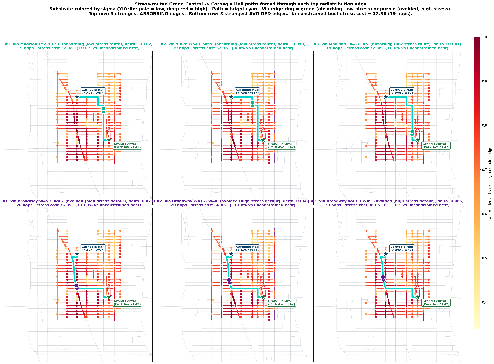
Remarks. This figure shows the per-edge structure of the substrate's recommendation behavior. Absorbing edges gain rerouted load when the second-order field becomes visible; avoided edges lose load. The asymmetry in the costs, where absorbing routes stay at 32.38 while avoided detours pay plus 13.8 percent, is structurally informative.
Claims. The substrate's recommendation behavior concentrates on a small set of edges. Six edges, three absorbing and three avoided, account for the bulk of the routing-mode flip between shortest-path and stress-aware routing. The pattern is local in edge space and global in path space, where each edge change propagates corridor-wide.
Boundaries. Six edges is the top six by magnitude of betweenness change; the actual number of affected edges is larger with diminishing magnitude. The selection comes from the optimization, not from ground-truth foot-traffic data.
Limitations and caveats. The figure predates the colormap-fix pass that the rest of the substrate's render pipeline received. The PRE_VIZFIX label indicates it uses the original sigma colormap, functionally equivalent and visually mismatched with the more recent figures. The render stays semantically correct.
Things to improve. Re-render with the canonical palette to match the rest of the figure set. Add quantitative annotations showing the full betweenness shift for each route, not only the chosen edge.
Questions for Jen. The pattern of absorbing and avoided edges feels like it should have a physical analog in active matter or in jamming literature: a small set of high-leverage cells that accept or reject load disproportionately. Is there a name in your field for this kind of structurally asymmetric load redistribution under perturbation?
Figure 5

Remarks. This is the figure where the substrate-level allostery becomes legible. The redistribution spreads corridor-wide and structured, with red on the new preferred avenues and blue on the old, and the corridor processes the load internally with no boundary leakage, away from the destination and the high-stress hot spots.
Claims. The substrate shows a corridor-wide soft-mode response to a static perturbation of the routing cost. The response is allosteric: a local change in cost weighting redistributes load globally but stays bounded, with zero leakage across the corridor boundary. The hop-count change is negligible (plus 0.33 percent) while the topological rerouting is significant.
Boundaries. The static perturbation here is the alpha-weighted stress cost, a single global parameter change. The substrate's response to non-static perturbations (time-varying capacity, dynamic shed permits, real-time pedestrian counts) stays uncharacterized at this scale.
Limitations and caveats. The PRE_VIZFIX render uses an earlier version of the colormap clipping, functionally equivalent and visually slightly different. The 95th-percentile clip excludes a small set of high-magnitude outliers; without the clip the absorbing and avoided structure is harder to read.
Things to improve. Run the same redistribution analysis under a sequence of perturbations (for example progressively activating each capacity layer one at a time) to characterize the substrate's response curve. Compare against a null model of random perturbations of similar magnitude to confirm the corridor-wide structure is signal.
Questions for Jen. This is the figure I have been most curious about your read on. The allosteric response under static perturbation, the bounded corridor with no boundary flux, the structured red-blue alternation between absorbing and avoided edges: does this look to you like the soft-mode response near a rigidity transition that you have characterized in tissue or jamming systems? Or is the analogy too thin because the corridor has a different boundary structure and the load redistribution mechanism (A* rerouting) is operationally different from elastic stress propagation?
Figure 6

Remarks. This is the substrate's foundational measurement: the camera-derived stress field at the per-block scale across the corridor. Every downstream figure reads against this. The colormap and range are locked in a project decision record so the field stays stable across renders and downstream analyses.
Claims. The stress field has structure that is not random and not uniform. The southwest-to-northeast gradient (Times Square hot, East Side cool) corresponds to known pedestrian density patterns. The localized hot spots at subway egress points and tourist attractions appear as smaller cells with high values inside larger cooler regions.
Boundaries. One hundred eighty-one cameras across the corridor, sampled at thirty-minute cadence. The Voronoi cells are catchment areas, and the cell boundary is the locus of equal nearest-camera distance, not a physically meaningful boundary. The stress score is a regression output, not a direct measurement of pedestrian count.
Limitations and caveats. The stress score regression is calibrated against author lived knowledge as the primary anchor (twelve reference blocks, eight aligned, four partial, zero misaligned). It is not calibrated against ground-truth pedestrian counts, which are not publicly available at this resolution and which commercial vendors offer outside the project budget. The thirty-minute cadence aliases short-duration phenomena such as a parade or a delivery truck blocking a sidewalk.
Things to improve. Acquire commercial pedestrian count data for a subset of corridor blocks to calibrate the regression against ground truth. Increase camera sampling cadence from 30 minutes toward 5 minutes so the substrate can respond to short-duration events.
Questions for Jen. The Voronoi tessellation is a static spatial partition that anchors per-camera scores to specific corridor regions. The Sridhar et al. paper on allocentric flocking argues that animals encode bearings to neighbors in either an allocentric (world-anchored) or egocentric (heading-relative) reference frame, and that allocentric encoding is necessary for coherent collective behavior. The Voronoi assignment here is functionally an allocentric anchor, since camera positions are world-fixed and the per-block sigma is anchored to those positions. Does the parallel hold in your reading, or is the analogy stretched because the corridor substrate has no agent-centered frame to compare against?
Figure 7

Remarks. This is the substrate's supply-side characterization. The four panels decompose the per-edge capacity factor into its constituent layers, then combine them into the effective denominator the routing cost reads against. The canonical affine alignment makes the corridor read left to right with Lexington vertical, matching the rest of the figure set.
Claims. The capacity field has structure that is not uniform across edges. Sidewalk width is geometric and stable; sheds are temporal and dynamic (currently 154 of 228 edges affected); frontage load is spatial and structural, concentrated on the avenues with retail and dining; the combined factor multiplies them. The composition is decomposable, so each layer can be activated or deactivated for ablation analyses.
Boundaries. Four layers appear here; the full capacity model has seven (sidewalk width, sheds, frontage, construction closures, station envelopes, open streets and bike lanes). The four shown are the highest-magnitude. The 228 cross-street edges are the operational scope; avenue edges are handled separately in the routing layer.
Limitations and caveats. The frontage layer combines six independent input datasets, and the per-component contributions are not visible in this aggregated panel. The shed layer is dynamic on the calendar of permit issuance, and the snapshot is a specific date in April 2026.
Things to improve. Add a fifth panel showing the per-edge construction closure factor. Add a sixth panel showing the time-varying combined capacity, for example capacity during AM rush against midday against PM rush with subway egress weighted by hourly ridership.
Questions for Jen. The capacity model is multiplicative: each layer is a dimensionless factor near [0.4, 1.4], and the combined factor is their product. The audit pillars suggest the multiplicative structure produces reasonable per-edge values. Is multiplicative composition the right operational form here, or would an additive or otherwise nonlinear composition be more physically defensible? My intuition says multiplicative, because each layer is a fractional reduction of physical capacity, and I am not sure if that intuition is grounded enough.
Figure 8
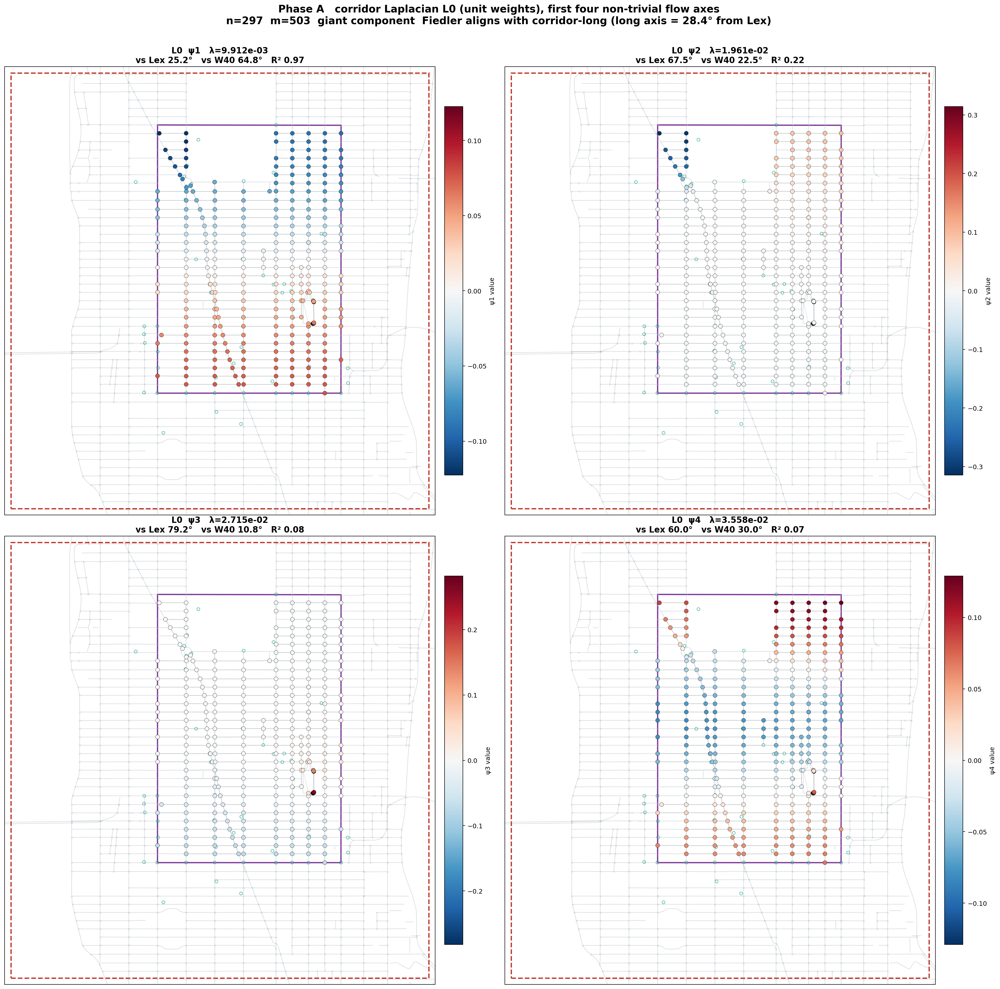
Remarks. This is the spectral characterization of the corridor graph operator. The Fiedler vector psi1 aligns sharply with the corridor long axis (R-squared 0.97), confirming that the dominant slow mode of the substrate is north-south flow. The next three eigenvectors capture cross-corridor structure, mid-corridor splits and block-by-block alternation.
Claims. The corridor's spectral structure is dominated by one large-scale mode (psi1, north-south flow) with three smaller-scale modes that capture progressively finer structure. The R-squared values fall sharply from psi1 (0.97) to psi2 (0.22) to psi3 (0.08) and psi4 (0.07), suggesting the corridor's spectral structure is well-approximated by its first eigenvector for many purposes.
Boundaries. Unit edge weights are used here; the stress-weighted Laplacian produces a different spectrum, with off-diagonal coupling driven by the per-edge stress values. The four eigenvectors shown are the lowest non-trivial; higher eigenvectors capture localized noise and are not analytically meaningful at this scale.
Limitations and caveats. The R-squared values are computed against the corridor long axis fit, so they measure how well each eigenvector aligns with the corridor's principal direction, not the eigenvector's structural significance per se. A high-R-squared eigenvector could still be operationally less important than a low-R-squared eigenvector if the routing layer reads against the latter more directly.
Things to improve. Compute the same eigenvector decomposition for the stress-weighted Laplacian and overlay the two sets. Identify which directions are stable across both operators (the structural directions of the corridor) and which directions appear only under stress weighting (the directions activated by the stress field).
Questions for Jen. The eigenvalue gap between psi1 and psi2 is about a factor of two. In a physical context this kind of spectral gap is sometimes read as a measure of how strongly the system's slowest mode dominates. Is that the right read here, or is the gap less meaningful because the corridor is a finite graph with boundary effects and not a continuum system?
Figure 9
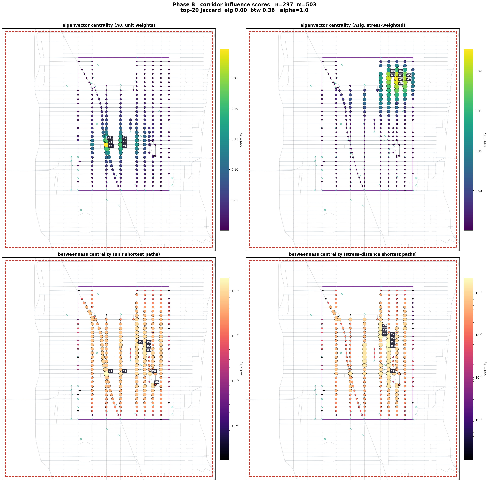
Remarks. This figure decomposes corridor influence into four measures and shows how stress weighting reorganizes them. The Jaccard 0.00 between the two eigenvector centralities is striking: the structurally most central nodes under unit weights and the structurally most central low-stress nodes under stress weights are entirely disjoint top-20 sets.
Claims. Stress weighting changes which nodes the substrate reads as influential. The change is dramatic for eigenvector centrality (Jaccard 0.00) and moderate for betweenness centrality (Jaccard 0.38). The substrate's notion of which nodes matter is not a stable graph-theoretic property; it depends on the cost weighting.
Boundaries. The top-20 cutoff is a choice; the underlying centrality scores are continuous, and the Jaccard at top-50 or top-100 would be higher.
Limitations and caveats. Centrality measures are graph-theoretic; they do not directly encode pedestrian-relevant notions of importance such as visibility, accessibility or attractiveness. The substrate's interpretation of influence is structural-substrate influence, not functional-pedestrian influence.
Things to improve. Compute additional centrality measures (closeness, current-flow betweenness, communicability) and compare. A more complete characterization would help identify which measures stay stable across weightings and which are weighting-sensitive.
Questions for Jen. The Jaccard 0.00 between the two eigenvector centralities surprised me. I expected substantial overlap because the corridor's structural backbone (Madison, 5th, Park) is geographically stable. Instead the stress weighting picks out a different set of nodes entirely. Does this surprise you, or is it consistent with the weight-sensitive eigenvector reorganization you would expect when the operator's spectrum is moderately degenerate?
Figure 10
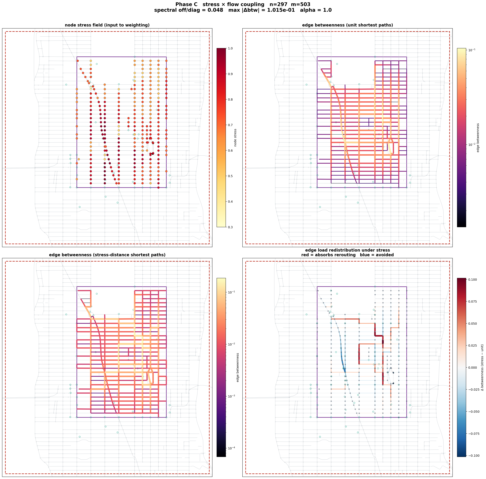
Remarks. This is the operator-level analog of the route comparison figure in Section 1.1. Where that figure showed two specific routes, this figure shows the betweenness field across the entire corridor under the two weightings. The redistribution panel is the substrate's response surface to the stress-weighting perturbation.
Claims. The substrate's flow field reorganizes under stress weighting in a structured, corridor-wide pattern. The redistribution magnitude is bounded (about 0.1 at the 95th percentile) and distributed, since most edges show some shift. The spectral off-diagonal of 0.048 quantifies the coupling between the unweighted and stress-weighted Laplacian spectra.
Boundaries. The alpha = 1.0 setting is the canonical lock; alternative alpha values produce qualitatively similar pictures with scaled magnitudes. The shortest-path computation uses Dijkstra on the corridor graph; alternative path-finding produces different fields.
Limitations and caveats. The percentile clipping for the stress display compresses the dynamic range; the true range is wider but visually obscured by outliers. The log-scale colormap on the betweenness panels makes it hard to compare absolute magnitudes between unit and stress weightings.
Things to improve. Add a fifth panel showing the spectral difference between the two Laplacians as a node-color field, to make the operator-level perturbation directly visible. Currently the perturbation is implicit in the difference between the betweenness fields.
Questions for Jen. The spectral off-diagonal of 0.048 is small, so the stress weighting is a perturbation, not a regime change. Yet the betweenness redistribution is substantial (max 0.1015, about 10 percent of total mass). The amplification ratio from perturbation magnitude to response magnitude feels like it would be sensitive to whether the corridor operates near a critical regime. Does the ratio of 0.048 perturbation to 0.1 response amplitude look critical to you, or is it firmly in the linear-response regime?
Figure 11
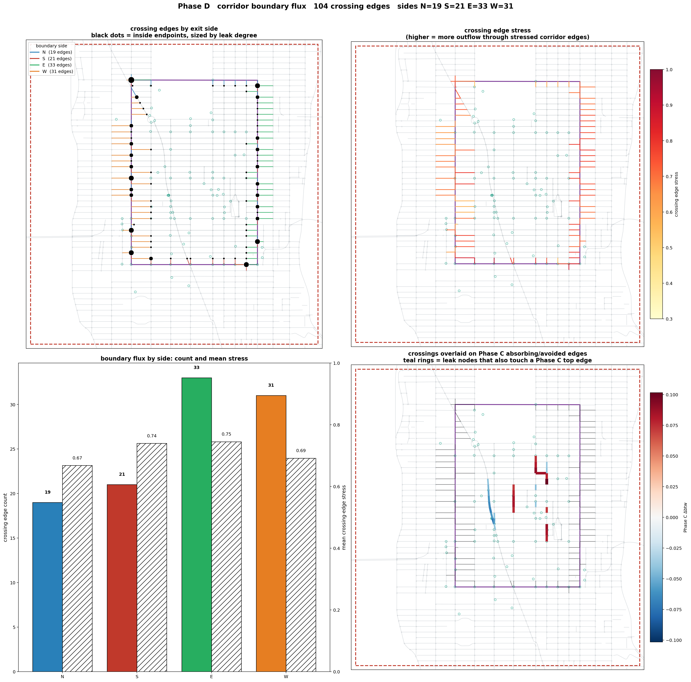
Remarks. This figure isolates one question: when load redistributes under stress-aware routing, does the redistribution stay inside the corridor or leak across the boundary? The answer is that it stays inside.
Claims. The corridor is a forward-invariant set with respect to load redistribution under the stress perturbation. The 104 boundary-crossing edges absorb zero of the absorbing and avoided edge set. The redistribution is corridor-internal, suggesting the corridor operates as an autonomous functional unit at this scale.
Boundaries. The boundary is defined geometrically, the perimeter of the 40th to 59th, Lexington to 8th rectangle. Alternative boundary definitions (camera-coverage hull, planning district, neighborhood) would produce different boundary sets and potentially different leakage patterns.
Limitations and caveats. The zero-leakage finding is for this specific perturbation (stress-weighted against unit-weighted routing) on this specific origin-destination distribution. Other perturbations, such as adding a new origin outside the corridor, would change the boundary flux pattern.
Things to improve. Test the boundary flux under multiple perturbations and origin distributions. If the corridor consistently shows zero leakage across diverse perturbations the autonomy claim strengthens; if it leaks under some perturbations, characterize those.
Questions for Jen. The zero-leakage property feels significant. In your tissue or jamming work, do you have an analog for boundary flux as a diagnostic of an autonomous functional unit? My naive read is that the corridor acts like a closed compartment with respect to the stress perturbation, and I am not sure if that compartment-like behavior is the right framing for a routing substrate.
Figure 12
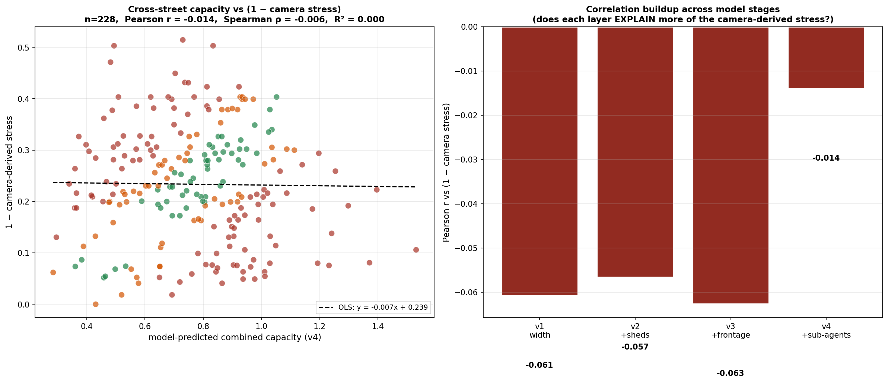
Remarks. This is the substrate's most important validation result. The supply side (cross-street capacity model) and the demand side (camera-derived stress field) are orthogonal: knowing one tells you essentially nothing about the other. That orthogonality is what allows the routing cost to carry independent information from each side.
Claims. The supply and demand layers carry independent signal. The routing cost is therefore not a tautology: the capacity model is not a re-expression of the stress field, and the stress field is not a re-expression of the capacity model. The orthogonality confirms the two measurements measure different things.
Boundaries. Orthogonality at the per-edge cross-street level. The substrate stays unvalidated for orthogonality at the per-block, per-corridor or per-time-window level. The 228 cross-street edges are the operational scope.
Limitations and caveats. Orthogonality is a necessary but not sufficient condition for the routing cost to be informative. Two genuinely independent random fields would also produce orthogonality. The result does not validate that either layer is individually accurate; it validates only that they are not redundant.
Things to improve. Cross-validate with an external supply-side measurement, for example StreetLight pedestrian density data, to check whether the camera stress is orthogonal to that as well. If yes, the substrate's measurements form a basis-like decomposition of pedestrian flow.
Questions for Jen. The orthogonality result is more dramatic than I expected: I would have predicted some correlation between sidewalk width or shed coverage and camera-derived stress, since wider sidewalks could shift pedestrian density. Instead the correlation is essentially zero. Is this kind of orthogonality result standard in your field as a validation pillar, or is it a peculiarity of the substrate's particular measurement setup?
Figure 13
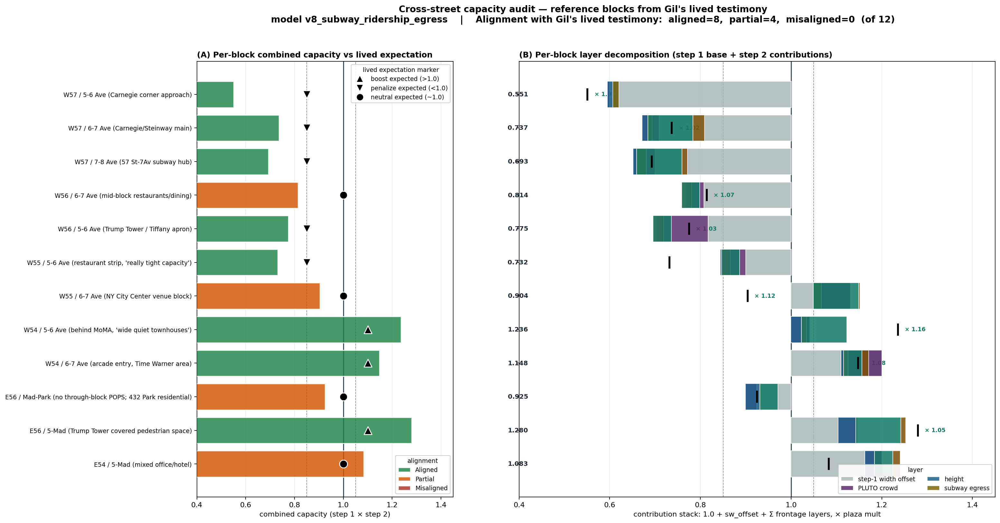
Remarks. This is the substrate's primary validation against an external measurement. Author lived knowledge is treated as ground truth for these twelve blocks, and the substrate's predictions are evaluated against the polarity assigned by lived experience. Eight of twelve fully align, four are partial (predicted polarity weaker than lived but in the right direction) and zero are misaligned.
Claims. The substrate's predictions agree with lived experience at the polarity level on 12 of 12 blocks. The four partial cases are cases where the substrate predicts a milder version of the lived polarity. The zero misalignments suggest the substrate produces no predictions that contradict ground truth at this scale.
Boundaries. Twelve blocks is a small sample. The lived knowledge is one author's experience; multi-informant validation has not been performed. The polarity thresholds are author-set, not derived from a calibration dataset.
Limitations and caveats. This is a self-report validation; the author who set the thresholds is the same author whose lived experience defines the ground truth, so confirmation bias is possible. The twelve blocks were chosen because the author had specific opinions about them, which may select for blocks where the substrate is more likely to agree.
Things to improve. Recruit two or three additional informants who walk the corridor regularly to provide independent polarity assignments on the same twelve blocks. Compute inter-informant agreement and use the consensus polarity as the validation target.
Questions for Jen. Lived-knowledge audit feels like the right validation strategy for a domain where ground-truth quantitative data is scarce. Does this kind of self-report-anchored validation have an analog in your field, or do you typically have access to more rigorous ground-truth measurements that make this kind of audit unnecessary?
Figure 14
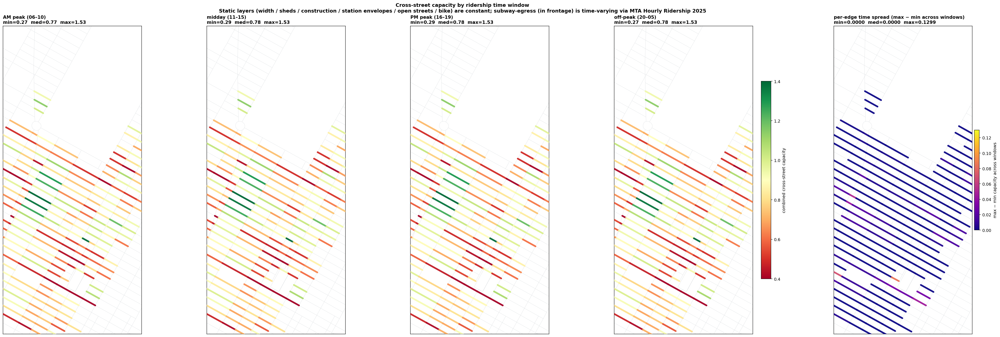
Remarks. This figure isolates the substrate's only currently active time-varying input: subway egress weighted by hourly ridership. Other capacity layers (sidewalk width, sheds, frontage) stay static at the daily timescale.
Claims. The substrate's capacity field changes meaningfully across time windows in a structured, station-anchored pattern. AM peak and PM peak both lower capacity at edges near high-ridership stations; midday and off-peak relax those edges. The time-varying behavior is decomposable, with the static capacity as a baseline and the time-varying contribution as a modulation.
Boundaries. Four time windows is the canonical decomposition; other temporal partitions (hourly, weekday against weekend) have not been computed. The time-varying input is currently subway egress only; sidewalk sheds and other layers do not vary by hour.
Limitations and caveats. Hourly ridership is from MTA Open Data, which lags real time by several days to a week. The substrate's time-varying capacity is therefore historical-pattern-based, not real-time-responsive.
Things to improve. Add real-time data sources where available: traffic camera feeds for instantaneous crowd density, the MTA real-time elevator outage feed for accessibility-sensitive routing and the active construction permit feed for shed activations. The substrate's architecture is ready to consume real-time inputs; the data sources are the missing piece.
Questions for Jen. The time-varying behavior is currently driven only by subway egress, while the substrate's structure is modular, so any per-edge factor can be promoted to a time-varying input. Is there a principled way to think about which capacity layers should be time-varying and which should stay static? My intuition says anything that physically changes within a day (sheds, construction, traffic) should be time-varying, and the data lag makes some of these effectively static for routing purposes.
Figure 15
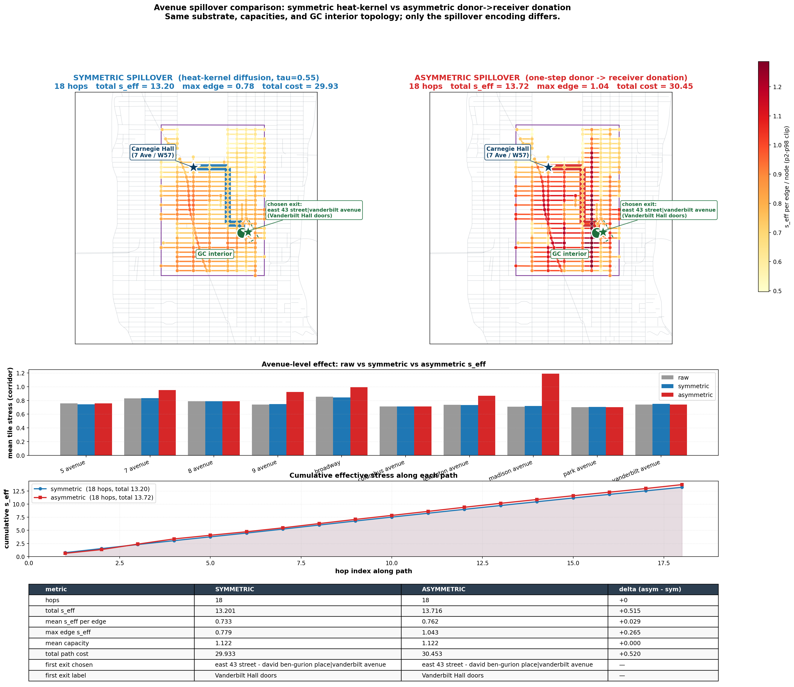
Remarks. This figure tests two coupling models for cross-avenue stress propagation. The symmetric mode is heat-kernel diffusion, where stress spreads bidirectionally with a time constant. The asymmetric mode is one-step donation, where stress flows from a designated donor avenue to a receiver with no back-reaction.
Claims. The two coupling models produce structurally similar paths with small but non-zero metric differences. The asymmetric mode produces a higher peak at the receiver avenue (Madison) where the donation accumulates; the symmetric mode produces a flatter distribution. Path-level costs differ by about 0.5 units, small relative to the roughly 30-unit total.
Boundaries. Two specific coupling models are tested. Other coupling models (full diffusion with different time constants, network-flow donation, adaptive coupling) have not been characterized.
Limitations and caveats. The choice of donor and receiver avenue in the asymmetric mode is set by the user; alternative pairings would change the results. The symmetric mode's time constant is chosen by hand, and alternative values produce different effective coupling strengths.
Things to improve. Run both modes across a sweep of coupling parameters to characterize the substrate's response curve. Identify regimes where the two modes diverge meaningfully and regimes where they are operationally equivalent.
Questions for Jen. The asymmetric coupling mode is unphysical in the strict sense, since real cross-avenue stress propagation has no preferred direction. The substrate uses it because it captures a specific operational pattern, the overflow from a high-stress avenue onto its low-stress neighbor. Is there a more principled way to encode this operational pattern without an asymmetric coupling, or is the asymmetric mode a defensible operational simplification of a structurally bidirectional process?
The figures characterize the substrate from four directions: the routing demonstration (Section 1), the underlying capacity field (Section 2), the operator-level spectral analysis (Section 3) and the validation against lived knowledge and the orthogonality of supply and demand (Section 4). Each figure carries its own narrower questions above.
Is the substrate operating near a rigidity transition? The corridor shows an allosteric response under static perturbation (Section 1.5); the boundary is forward-invariant (Section 3.4); the supply and demand layers are orthogonal (Section 4.1); the spectral structure is dominated by one large-scale mode with R-squared 0.97 (Section 3.1); and the centrality reorganization under stress weighting is dramatic, with Jaccard 0.00 between the top-20 unit-weighted and stress-weighted eigenvector centrality sets (Section 3.2). These five observations together would be consistent with a system near a rigidity transition where small constraint perturbations produce large, structured, bounded responses. A system well inside the rigid regime would show a more localized, less amplified response, and a system well inside the floppy regime would not maintain the boundary invariance.
I read the substrate's behavior as near rigidity, with the corridor as the rigid unit and the routing layer as the perturbation field. I am not sure if that read survives contact with your physical intuition. If it does, the next direction would be to characterize the substrate's distance from the rigidity transition empirically, by sweeping a control parameter and measuring the response amplitude. If you have a preferred control parameter to try, or a preferred metric for the response amplitude, I would value the suggestion. Thank you for reading.
The literature cited in the per-figure discussions, organized by the domain each piece primarily addresses. The two 2025 papers I came across recently (Sridhar et al. and Sane et al.) are the most direct conceptual bridges between the routing substrate and your physical-systems framing.